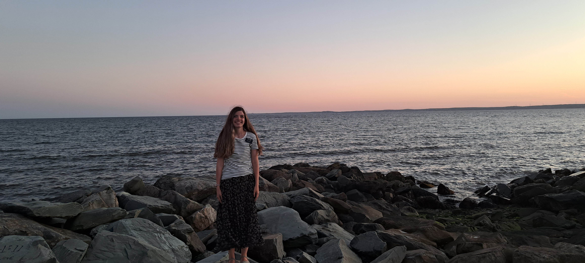
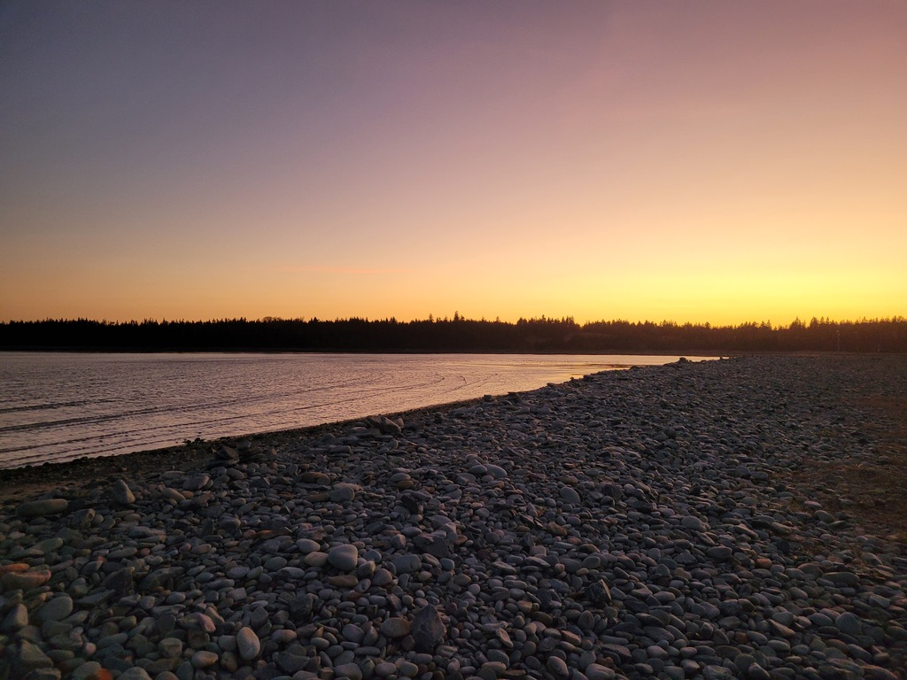
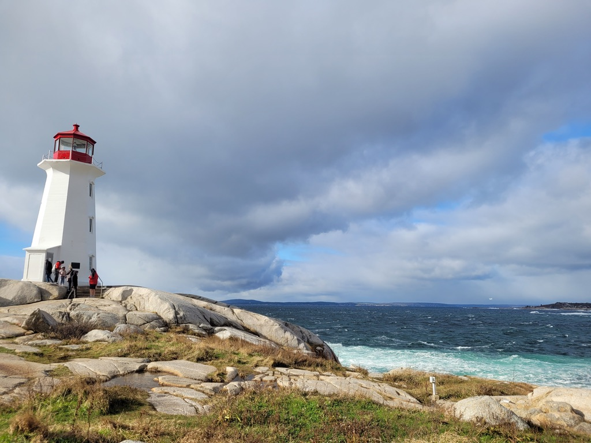
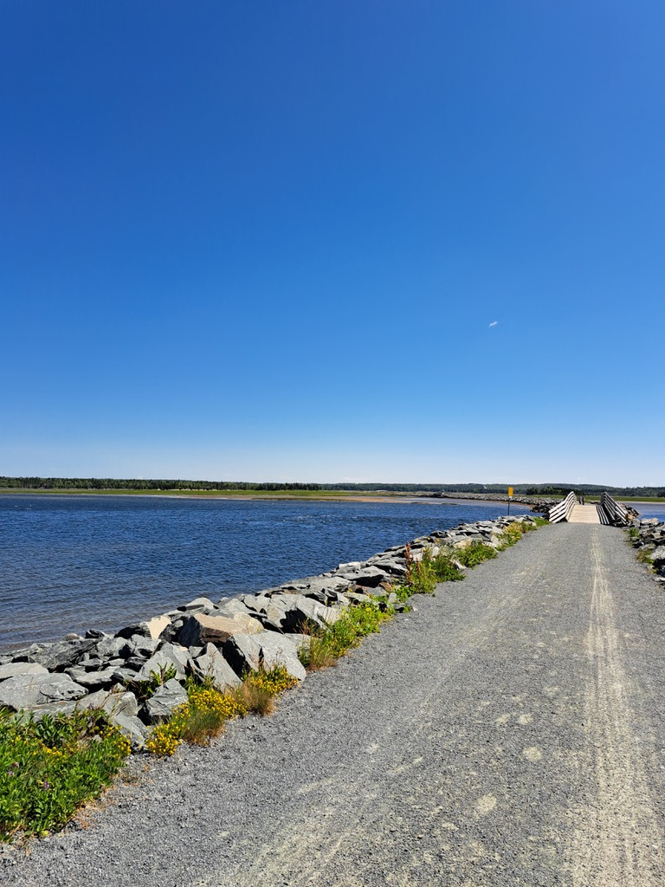
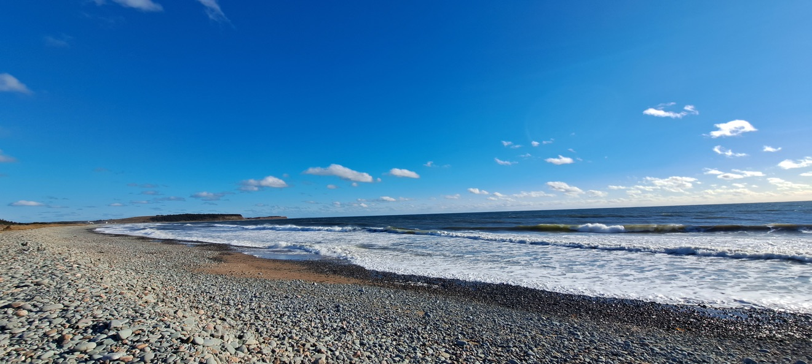
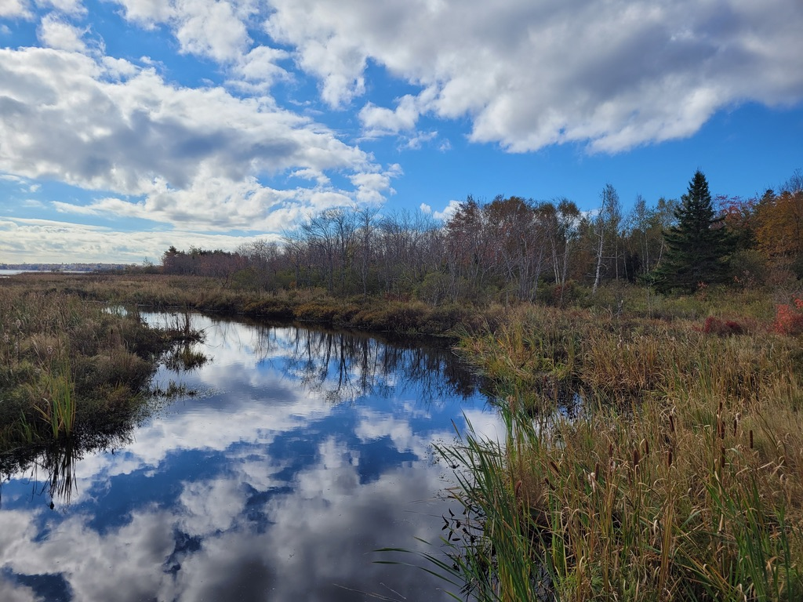
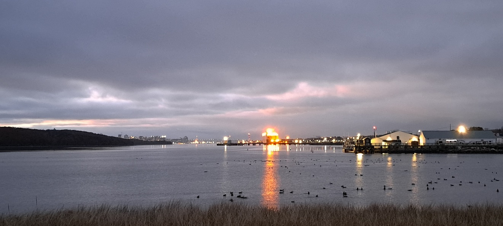

I spent 6 months in Nova Scotia during 2022. I had the amazing opportunity to see and observe its beauty.
This cute little market has a boardwalk and colorfully-painted shops. Many people catch lobsters, fish, clams, etc.
Peggy's Cove is a highly famous tourist spot because of its majestic views with a lighthouse, rocky coastline, and crashing waves. Several people a year die from getting swept off rocks by these waves.
This trail is actually the old Trans Canada Railroad turned into a trail. You can walk or bike for miles and miles up the East Coast of Nova Scotia. The Trans Canada trail is found throughout Canada as well.
This beach is a spot many like to surf at and often has high waves in the aftermaths of Atlantic hurricanes. The cover photo is also of Lawrencetown Beach right before a hurricane came.
There are multiple trails throughout Cole Harbour and the surrounding communities. Most of them go through the nearby forests.
The Halifax Harbour is well-known for its port and trade as cargo ships and cruise ships often frequent the harbour. It even has a massive toll bridge.
